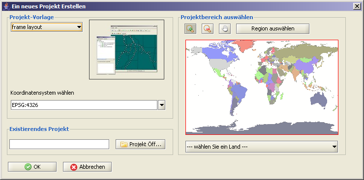

Projekte neu anlegen
Das Dialogfenster zum Anlegen neuer Projekte kann entweder über
Projekt >  neues Projekt anlegen
oder durch Betätigen der Tastenkombination
Strg+N
erreicht werden.
Innerhalb des Dialogfensters kann der Anwender entweder aus entsprechend
vorkonfigurierten Projektvorlagen (xml-Templates) auswählen oder die Einstellungen
eines bereits existierenden Projektes als Vorlage verwenden. neues Projekt anlegen
oder durch Betätigen der Tastenkombination
Strg+N
erreicht werden.
Innerhalb des Dialogfensters kann der Anwender entweder aus entsprechend
vorkonfigurierten Projektvorlagen (xml-Templates) auswählen oder die Einstellungen
eines bereits existierenden Projektes als Vorlage verwenden.
Die Projektvorlagen enthalten keine Daten, wohingegen bei der Verwendung bereits existierender Projekte, deren Datenbestände übernommen werden.
Zusätzlich kann das Koordinatensystem ausgewählt werden, welches dann für
alle Ebenen innerhalb dieses Projektes gilt.
Um die BBox zu setzten gehen Sie wie folgt vor: entweder innerhalb der Liste das entsprechende Land auswählen oder nach dem Aktivieren
des Region auswählen Buttons innerhalb der Karte ein Auswahlrechteck (roter Rahmen) aufziehen.

|